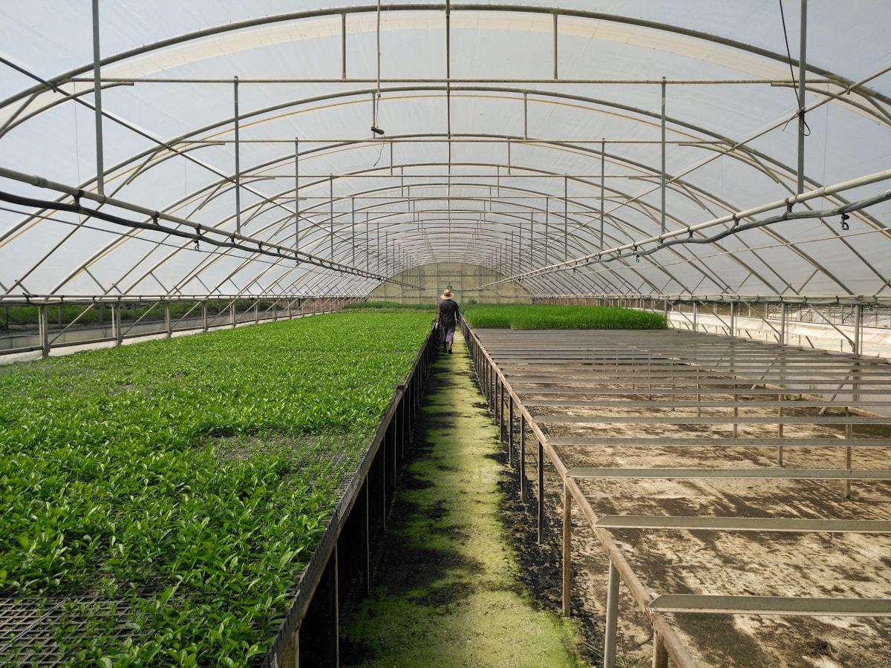

Poly-tunnel systems
Covered growing under a tunnel structure — the practical starting point for most growers moving from open field to protected cultivation.
We handle the construction, and specify the irrigation and growing media that go inside it so the parts are matched from the outset.
- Built for protected cultivation at working scale
- Irrigation and hydroponic systems fitted to the layout
- Coco peat grow bags, slabs and planter bags supplied to suit